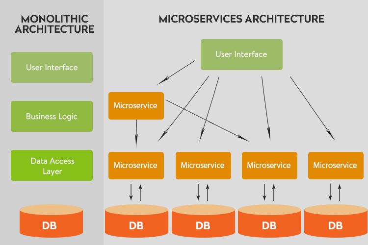
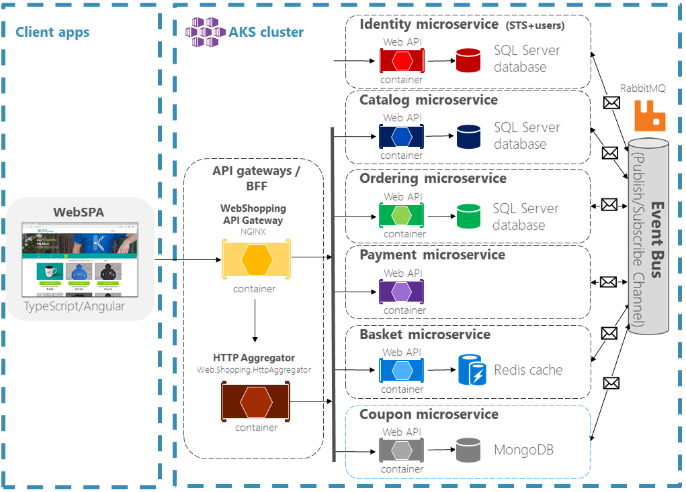

Tokens
PAT Functionality and Use Cases
Objectives
- Understanding Authorization and Authentication
- What are Tokens - Authentication + Authorization
- Token Use Cases + Different Types of Tokens (JWT, PAT,
What are Tokens?
Architecture Types
Monolithic
Tightly Coupled
Microservices
Loosly Coupled
Identify characteristics of both
Example of Storyblocks Architecture
Monolithic and Microservices
Another view of Microservices
Robert Martin (Single-responsibility principle)
Development Process
What is DevOps or DevSecOps?
DevOps is a set of practices that automates the processes between software development and IT teams, in order that they can build, test, and release software faster and more reliably.

Application Tools
Front-end Frameworks ✦ Back-end Frameworks ✦ Automation Tools ✦ Monitoring Tools
Front-end frameworks
- HTML Template Based- Bootstrap, Zurb, PureCSS, etc.
- Component-Based- React, Angular, Vue, Ember, etc.
- Template Binding- HandleBars, Mustashe, Ejs, knockout, jade, etc.
Back-end Frameworks
- Routing- Express.js, Hapi.js, page.js
- Persistant Data Source- Relational Databases [MySQL, PostgreSQL], NoSQL [MongoDB, CouchDB/Cloudant], Graph Databases, ect..
Automation
- Module Bundler/Task Runner- Webpack, Grunt, Gulp
- Testing- Jest, Mocha, Jasmine, ect.